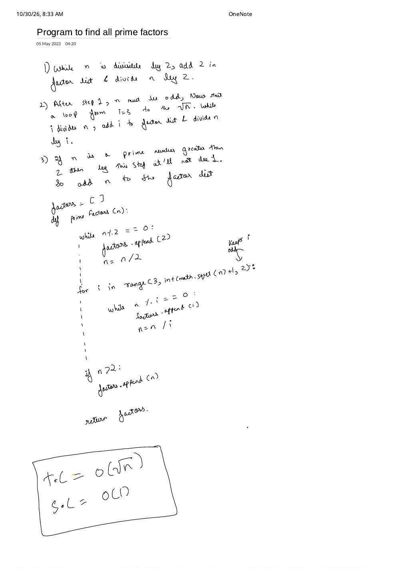

Program to Find All Prime Factors of a Number in $O(\sqrt{n})$
Expanded from handwritten competitive coding study notes (01_Program_to_find_all_prime_factors.pdf)
Given an integer $n \ge 2$, we want to decompose $n$ into its complete multiset of prime factors in ascending order (for example, $315 = 3 \times 3 \times 5 \times 7 \to [3, 3, 5, 7]$ and $58 = 2 \times 29 \to [2, 29]$) without precomputing a prime table. Because $2$ is the only even prime, separating $2$ upfront cuts our $\sqrt{n}$ trial-division loop iterations strictly in half.
1. The Three-Step Parity-Optimized Algorithm
Following the exact three-stage breakdown in the handwritten note:
Three-Stage Prime Factorization Pipeline
- Stage 1 — Divide out all powers of $2$: While $n$ is divisible by $2$ (
n % 2 == 0), append $2$ tofactorsand update $n \leftarrow n / 2$. - Stage 2 — Sweep odd divisors $i = 3, 5, 7, \dots$ up to $\sqrt{n}$: After Stage 1 finishes, $n$ is guaranteed to be odd, so no even integer can ever divide it. Start $i = 3$ and step by $+2$ ("Keeps
iodd") while $i \times i \le n$; inside, runwhile (n % i == 0)to append $i$ and divide $n \leftarrow n / i$. - Stage 3 — Capture the leftover prime $\gt 2$: If $n$ still has a prime factor strictly larger than $\sqrt{\text{original } n}$, Stages 1 and 2 cannot reach it—so $n$ remains $\gt 2$ at the end instead of collapsing to $1$. If $n \gt 2$, append $n$ directly to
factors!
2. Two Correctness Questions Worth Double-Checking
- Could an odd composite $i$ (like $i = 9$ or $i = 15$) ever get appended in Stage 2? Never. Any odd composite $i$ factors into strictly smaller odd primes $p \lt i$ (e.g. $9 = 3 \times 3$, $15 = 3 \times 5$). Because Stage 2 uses a
while (n % p == 0)loop, every factor of $3$ was already completely stripped out of $n$ when $i = 3$ ran—makingn % 9 == 0mathematically impossible when $i$ reaches $9$. - Why
if (n > 2)in Stage 3 (and why can there only be one leftover prime)? Stage 1 already stripped every factor of $2$, so at Stage 3 $n$ is an odd integer $\ge 1$—either $n = 1$ (completely factored) or $n \ge 3$ (son > 2andn > 1test the exact same condition!). Moreover, $n$ cannot be a product of two primes $p_1, p_2 \gt \sqrt{n_{\text{curr}}}$ because $p_1 p_2 \gt n_{\text{curr}}$; hence the leftover $n \gt 2$ is guaranteed to be a single prime.
3. C++ Implementation
Updating the loop guard dynamically as i * i <= n shrinks the upper bound every time a small prime factor is divided out, finishing in $O(\log n)$ divisions whenever $n$ is smooth:
#include <bits/stdc++.h>
using namespace std;
vector<long long> primeFactors(long long n) {
vector<long long> factors;
// 1) Strip all factors of 2
while (n % 2 == 0) {
factors.push_back(2);
n /= 2;
}
// 2) n is now odd; step by +2 to test only odd candidates up to sqrt(n)
for (long long i = 3; i * i <= n; i += 2) {
while (n % i == 0) {
factors.push_back(i);
n /= i;
}
}
// 3) If n is still > 2, the remaining value is a prime factor > sqrt(original n)
if (n > 2) {
factors.push_back(n);
}
return factors;
}4. Complexity & Multi-Query Contest Tip
• Auxiliary Space Complexity: $O(1)$ working variables (and at most $\lfloor \log_2 n \rfloor$ integers in the returned
factors vector, since every appended prime is $\ge 2$).
• Multi-query upgrade: If you must prime-factorize $Q = 10^5$ integers all bounded by $N \le 10^7$, precompute
spf[x] (Smallest Prime Factor) using a modified Sieve of Eratosthenes in $O(N \log \log N)$ and factor each $x$ in $O(\log x)$ divisions via x /= spf[x].
From the Handwritten Notes
Expand the original handwritten page below to inspect the exact 3-step algorithm, handwritten code, and complexity box:
View original note — Program to Find All Prime Factors (3-Step Algorithm, Odd-Step Loop & $O(\sqrt{n})$ Complexity)

